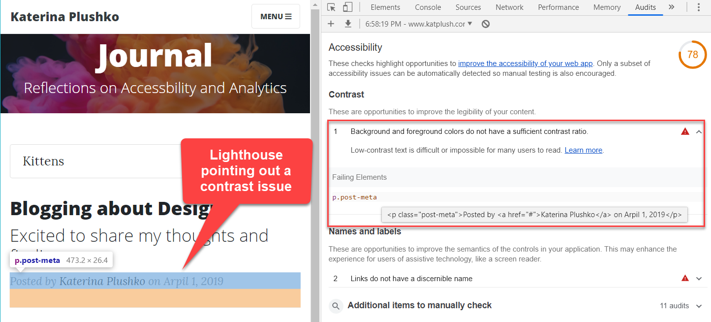
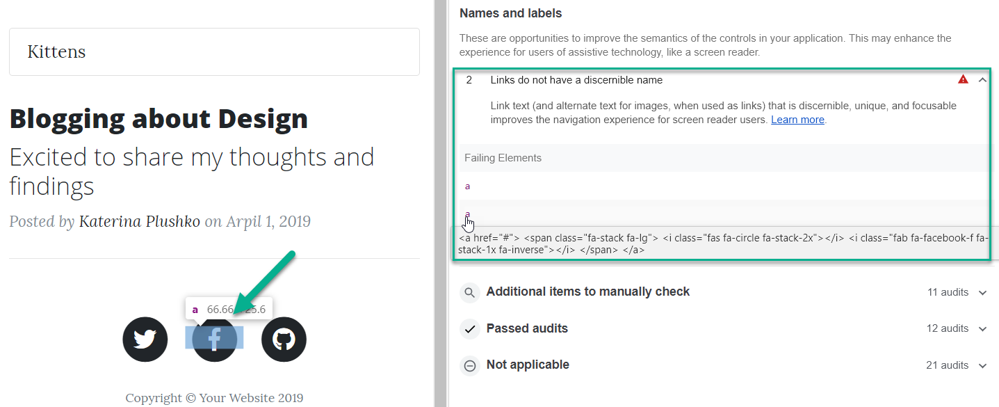
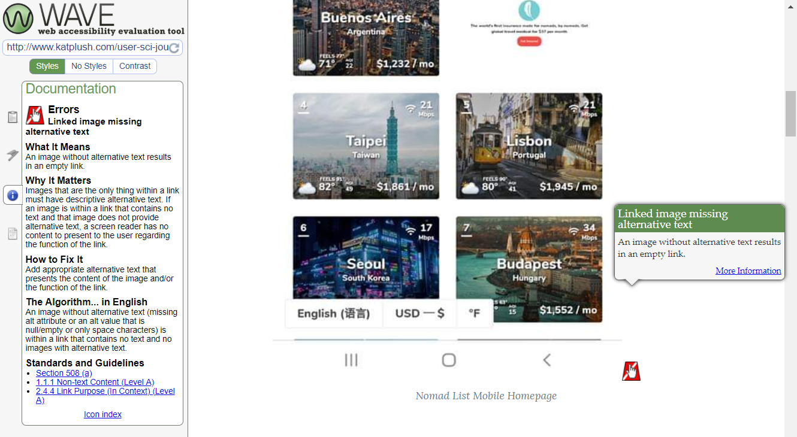
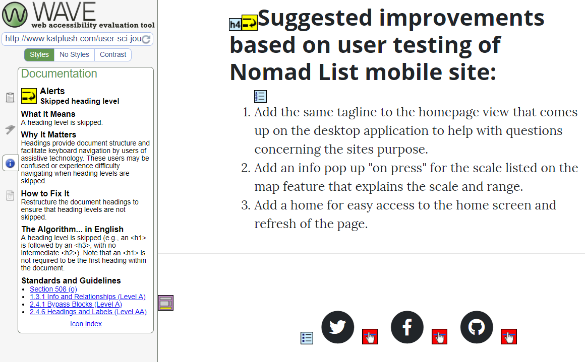

The following is a report on the accessibility of this particular User Science Journal and a review of some of the issues I discovered when running it through both the Lighthouse Chrome dev tool and the WAVE web accessibility evaluation tool.
The Audit
At the time of this writing, my index.html home page had not been updated much from the original template provided, but upon analysis showed that it needed some basic accessability improvements.
I ran an audit on it using the Chrome DevTools Lighthouse analysis tool, which brought up a 78% accessibility grade for my page with to primary issues impacting the score
- Background and foreground colors do not have a sufficient contrast ratio. Pointing out the low contrast of the text "Posted by" and "on date" which can be an issue for most users, especially ones with low vision.
- Links do not have a discernible name. Pointing out the social media links for Twitter, Facebook and GitHub were missing link text, the lack of which can cause confusion for keyboard and screen reader users.
- Linked image missing alternative text. Which pointed out that the image I had posted had no alt text describing the image, which makes it impossible for the screen reader to describe the image to the user.
- Skipped heading level. This error pointed out that my last heading was labeled with an "h4" tag when the preceding heading was an "h2" tag. This can cause confusion for users when navigating using keyboard assistive technology.


I also audited the Post 4 page of my user science journal. This page received a slightly higher score of 88 on the Lighthouse auditing tool due to the contrast issue mentioned above not being an issue but there were a few additional items pointed out by the WAVE tool.


Over all the issues listed above are not difficult to fix but can be easily over looked when a developer is either rushed or simply unaware.
The Fix
Listed below are the solutions to the issues listed above:
- For the contrast issue, I found the .post-meta class in the CSS file and changed the text color from light gray to black, increasing the contrast to meet accessibility guidelines.
- For the social media links I added URLs and aria-labels that advise what will happen if the link is clicked. For example the aria-label for the GitHub icon says "go to Katerina's GitHub".
- For the missing Alt text on the image on Post 4, I added a description of what the image is.
- For the skipped heading level, I opted to change the heading tag to a "P" tag and bold the line instead of changing to a "h3" tag, thought the h3 tag could have been manipulated in the CSS file if I still wanted to use a heading tag and have it standout.
Once these changes were completed, I reran both the homepage and the Post 4 page through both the Lighthouse audit and the WAVE tool. The Lighthouse audit gave both pages a score of 100 for accessibility and listed no additional warnings. The Wave tool which was previously returning 4 errors, was now returning none. All of these fixes took less than 5 minutes to complete, showing that it doesn't take much to improve much.